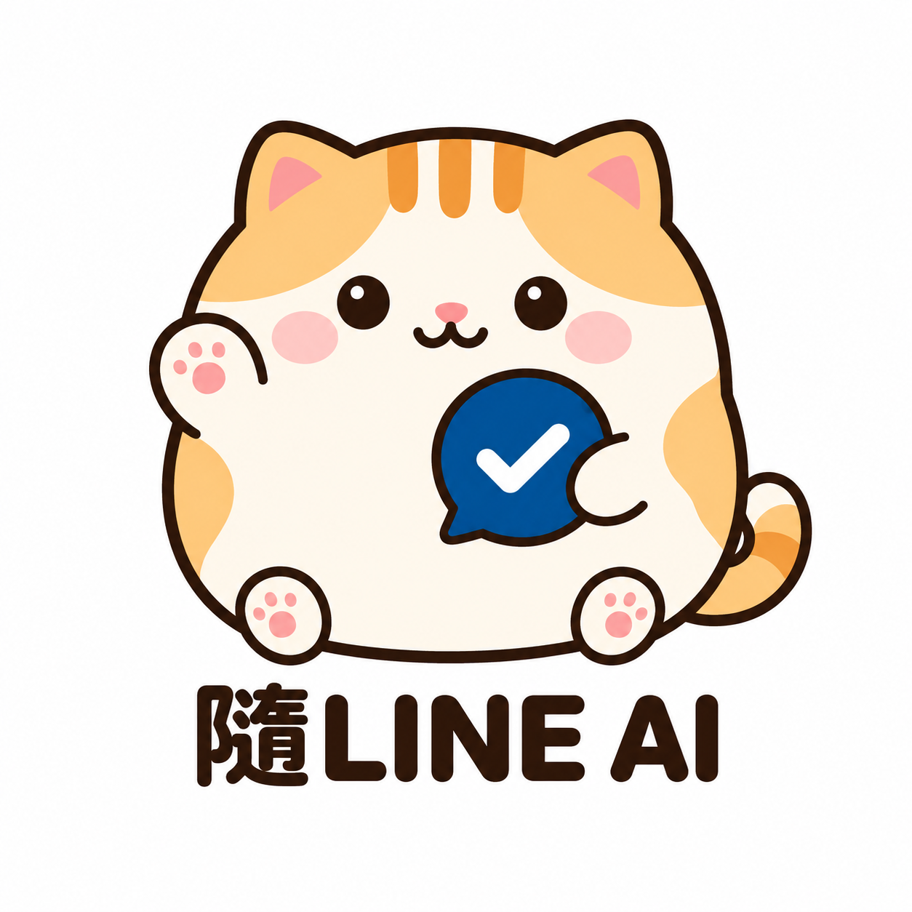
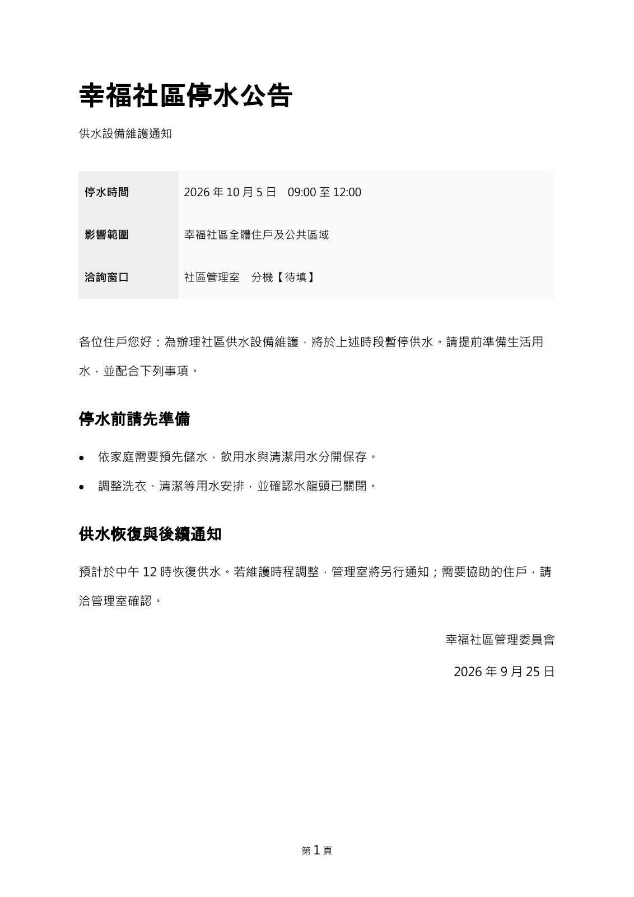

把話寫得更清楚
商品介紹、通知、信件與文字整理，依你的目的和讀者調整語氣。

隨LINE AI會寫文書，也能讀懂你的檔案
從一句需求，到一份有條理的正式文件。
寫公告、做表格，或傳上合約整理重點，都在 LINE 完成。
加入 LINE 後按「開始使用」即可啟用，不需要邀請碼。
商品介紹、通知、信件與文字整理，依你的目的和讀者調整語氣。
先補齊對象、日期與重點，再製作可編輯、列印或分享的檔案。
上傳 Word、PDF、Excel 或圖片，找出內容重點、日期金額與待確認事項，也能依要求重建修改稿。
簡單說，就能開始
在 LINE 打字交代，例如「幫我寫社區停水公告」。
貓咪會問必要的日期、對象與內容；未確定的資料可以先留空。
每次製作文書都先選 Word、PDF、圖片或 Excel，確認內容與次數後才開始。
收到完成通知後下載檔案，也能從「我的工作」再次取得連結。
需要多少，就買多少
先免費試用，再決定是否購買。點選方案後，依畫面引導從自己的 LINE 取得付款連結，再由藍新處理。
基本方案
適合商品文案、通知、文字整理與日常規劃。
文書加購包
須先買過基本 30 次方案，才可付費加購。
檔案分析加購包
須先買過基本 30 次方案，才可付費加購。
所有金額以新臺幣表示，各付款方式同價，不另加收付款手續費。未使用額度不因檔案下載期限屆滿而失效。每個 LINE 帳號有一次性的 10 次文字、10 次文書、5 次檔案分析免費額度，不是每日補發。每天最多整理 20 次新需求；已購買的剩餘額度可持續保留。
先看成果，再決定
清楚的標題、好找的重點、分明的章節。依文件用途安排版面，必要內容完整保留。
把停水時間、影響範圍與聯絡窗口放在前面，再交代住戶需要配合的事項。讀得清楚，也方便列印張貼。
此公告及商品表格均為虛構展示範例。Word、PDF與圖片皆為這份公告的實際檔案。

公告、信件、企劃與報告會依用途排版；Excel 提供可編輯表格及支援的基本計算。內容依提供資料製作，不保證複雜版面或官方範本完全相同。成果完成後可下載 7 天。
PDF 可分批分析數百頁：目前單檔最多 1,000 頁、50MB，文字最多 200 萬字。PDF／簡報每 20 頁算 1 次；其他格式每 100,000 字或 20 張圖算 1 次，取較大值。大檔先顯示總次數，確認後才扣次；未完成全數退回。支援常見 Office、OpenDocument、圖片、TXT、CSV、JSON、HTML、程式碼等。密碼、巨集、損壞檔或專用格式可能無法讀取；嵌入物件、影音、修訂或模糊文字等限制會說明。
開始之前，先看清楚
本服務由立翔人力企業社提供，透過「隨LINE AI」官方 LINE 接受文字需求。AI 會先整理內容與必要資訊，文書工作另提供格式選擇。同意直接處理模式後，送出文字需求即保留1次；文書選格式後保留1次。大檔需多次額度時先報價並確認。完成後交付文字或檔案下載連結。製作失敗且未交付成果時，退回該次工作額度。
Excel 表格每份使用 1 次文書額度。同一份文書的 Word、PDF 和圖片合計使用 1 次文書額度；下載已完成的檔案不重複扣次。文字、文書與檔案分析三種額度分開，不自動互換。大型或超出範圍的需求，須另確認工作內容及所需額度，未確認前不執行。
現已提供上傳檔案分析及依要求重建修改稿。小檔分析使用1次；大檔依頁數或內容量先列出次數，確認後才處理。另行追問或修改是新工作，同樣先說明所需額度，不重複扣文書額度。檔案會交由OpenAI處理，請只傳你有權使用且必要的資料。無法辨識會說明，不保證原始版面、圖形、公式或修訂紀錄完整還原。付費保存延長、代寄公告及代客操作其他網站尚未提供。
AI 可能產生錯誤。使用前請核對人名、日期、數字與內容；缺少資料時應補充或保留待填欄位。涉及法律、醫療或財務決策的內容，應另由適當專業人士確認。
基本文字方案為 30 次／NT$520；文書與檔案分析付費加購包各為 30 次／NT$250，須先有一筆有效且已確認付款的基本 30 次方案紀錄。文書前 10 次、檔案分析前 5 次免費試用，為每個帳號一次性額度，不是每日補發。
文書方案包含該份文書的擬稿及檔案製作，使用文書額度，不重複扣基本文字額度。單次購買，不自動續訂或補購。額度以系統確認金流付款成功後入帳，不以截圖或付款返回頁作為唯一依據。
本服務透過藍新「懶人管理系統」商店收款，業者為立翔人力企業社。支援信用卡一次付清及 Apple Pay、Google Pay、Samsung Pay；實際顯示依裝置與藍新支援情況而定。各方式同價，不另加收付款手續費。只從官方 LINE「購買次數」或「加購」開啟付款，不需自行匯款。
工作確認前可取消，不扣次數。已開始製作的工作如有問題，請在 LINE 提出，提供工作編號及簡短說明。未完成或系統失敗的工作會退回該工作次數；退回次數與退回已支付款項是不同處理。
需要申請退款時，可在 LINE 點「退款與說明」，再依提示傳送「退款申請：訂單編號（原因可不填）」。請提供訂單或工作編號，不需提供信用卡完整卡號、密碼或驗證碼。業者將查看購買、使用與交付紀錄，回覆處理方式；提出申請不代表已核准或已完成退款。
未使用額度、已交付服務及有瑕疵的成果，依個別交易情形與適用法令處理。不以「付款後一律不退款」排除消費者權利；本頁也不把所有 AI 服務一律認定為七日解除權的例外。若個別服務依法適用例外，須在提供前另行清楚告知並取得必要同意。依法應退還的款項，不因尚在人工審核就被免除。
退款採人工處理，請保留訂單編號；不要在 LINE 傳送信用卡完整卡號或驗證碼。
付款前請填寫並再次確認收件信箱；需要統編者請選公司／行號，填寫正確抬頭及統編。初期由業者人工開票，系統留下待開票紀錄並通知業者，核對後寄至你所填的信箱。目前未啟用綠界自動開票。
付款確認後，寄送作業預計5～7日內完成；仍依實際交易及法定時點開立、傳輸與交付，不因作業時間延後法定期限。付款收據或開票提醒不等於正式發票。未收到或資料需更正，請聯絡客服。
文書完成後提供 7 天下載期限。請在期限內把需要的檔案保存到自己的裝置；已下載的檔案不會因連結到期而消失。查看或下載不會重設期限，也不重複扣次。
下載連結可直接取得該份成果，請妥善保存，勿轉傳給不相關的人。若下載連結失效，可回 LINE「我的工作」取得新連結。到期後停止提供下載；付費延長目前尚未開放。
7 天指成果的可下載期間，不代表所有服務紀錄與備份均在第 7 天自動刪除。資料清理機制仍在完善中，如需查詢或申請刪除，請透過 LINE 聯絡業者。
為提供服務，我們會處理你的 LINE 識別碼、傳送的需求與補充內容、工作成果、額度紀錄，以及你主動提出的客服或退款資料。購買時另處理訂單、付款結果、收件信箱、發票類型、公司抬頭及統編；請勿在聊天室傳送信用卡完整卡號、密碼或驗證碼。
需求、上傳附件及分析內容會由 OpenAI API 處理，訊息收發使用 LINE，服務程式、帳務紀錄與成果檔案由 Render 雲端主機保存；付款由藍新處理；內部開票提醒及客服信件使用Google Gmail。資料可能涉及境外處理。請先以非敏感資料試用，避免提供不必要的個人、醫療、身分或其他機密資訊。本商品頁不提供檔案上傳或需求輸入表單。
我們只在你明確同意後保存個人喜好。你可在 LINE 查看、更新或要求清除喜好，並透過客服申請查詢、更正或刪除其他資料；依法或為必要的交易、爭議處理而須保留者，將說明原因。拒絕提供完成工作必要的資料時，可能無法執行該工作。
帳號、剩餘次數、訂單、工作與客服紀錄會保存在服務資料庫，用於交付、查詢及爭議處理。資料庫每 6 小時備份至主機持久磁碟，另使用主機供應商的磁碟快照。成果下載期限為 7 天；到期後不自動刪除所有紀錄與備份，如需查詢或申請刪除請聯絡客服。
有問題，回 LINE 找我們
服務品牌 隨LINE AI
服務業者 立翔人力企業社
統一編號 87418165
代表人 蕭亘能
營業地址 桃園市平鎮區龍恩里游泳路163號
客服信箱 qwes4572768@gmail.com
收款商店 懶人管理系統（藍新金流）
官方 LINE @997fcdse
此連結只預填詢問文字，需由你送出。人工客服不保證即時回覆。
{kind=link}